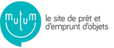
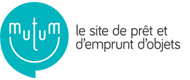

Inside


<speakers />
Guillaume
Full stack developer

Mathieu
Full stack developer

Sébastien
Lead developer
c'est quoi ?
Recherchez, découvrez, consommez autrement...
Tout l'univers du collaboratif et plus encore !
Hub de partenaires

 

 ...
...
D'une idée à une plateforme en 15 mois
Juin 2015
Emergence d'une idée
Décembre 2015
Présentation d'un POC
Janvier 2016
Constitution de l'équipe
10 Février 2016
Début des développements

18-21 Mai 2016
Bêta privée
12 septembre 2016
Bêta publique
15 mars 2017
Lancement de la V1
*aaS first
Ne pas réinventer la roue
Hosting


Agilité @ SoUse

Théorie vs Pratique
Adapter la méthode au projet
Chez SoUse
Kanban

Chez SoUse
Intégration continue
Chez SoUse
Livraison continue
Chez SoUse
Déploiement à la demande
SPA or not SPA ?
SPA & SEO
Protéger les APIs
Chatbot
Top 2016 Buzzword
Solution Ad-Hoc

Classification
Extraction
Action !
Facebook Messenger
Métriques
Architecture
Intégration d'API
On a tout vu !
Intégration facile
Intégration moins facile

Monitoring

Feature Team
Une team motivée
Une team multi-profils
Une team répartie
Remote working
Association de différents profils
Une team organisée
Github Flow

UX-UI
Graphiste / Intégrateur
UX Design, Responsive, compatibilité IE...
Tests utilisateurs
UX évidente pour nous, pas pour tous

Evoluer pour s'améliorer
Applis mobiles
Usage Web ≠ Usage Mobile
Geolocation First

Techno dédiée
DevOps
Au début
- Merge manuel des branches GitHub
- Construction manuelle d'une image Docker
- Déploiement manuel de l'image
- Ca marche, mais pas sans douleur

Maintenant
- Hubot pour les merge de Pull Request
- Deploy au commit
- Hubot pour les MEP
De Java à Scala
De SpringBoot à Play!
Appels aux partenaires
Async obligatoire
APIs Java
Future, Optional, JSON....
Play!
Async by design

Scala
case class, pattern matching, futures

React at scale
Maquette + React = ❤
Surveiller les perfs
Utiliser les bonnes libs
Merci !
www.souse.fr